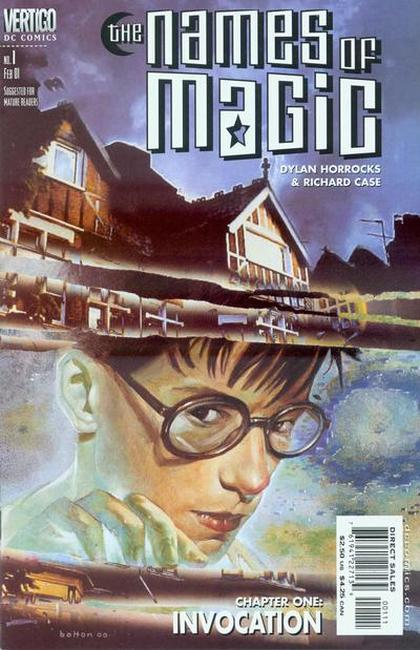

Series: 5 issues 2001, 1 collection TPB
Publisher: Vertigo (DC)
Written by Dylan Horrocks
Illustrations by Richard Case
Cover by John Bolton
Tim Hunter is back (Books of Magic), and he has finally accepted the role he plays in the grander scheme of things, as he learns to recapture his magic.